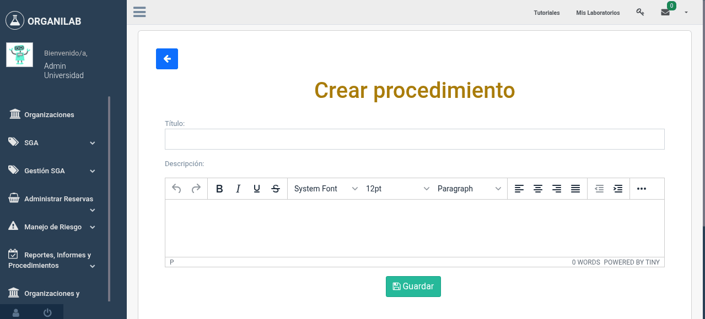
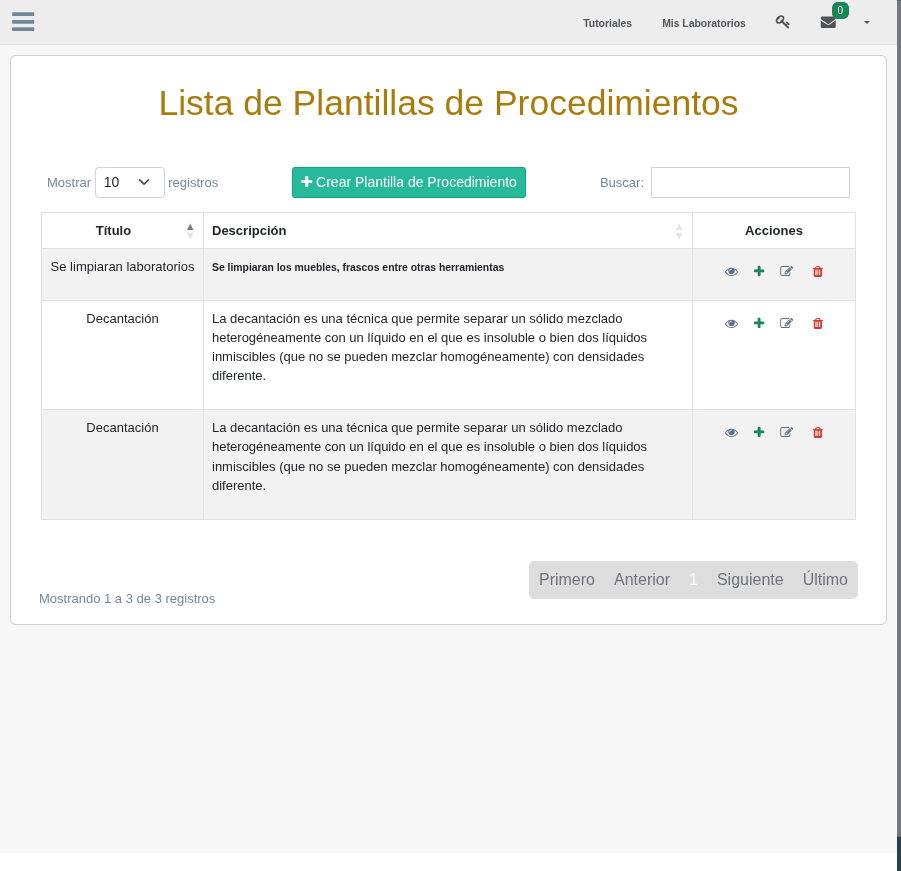
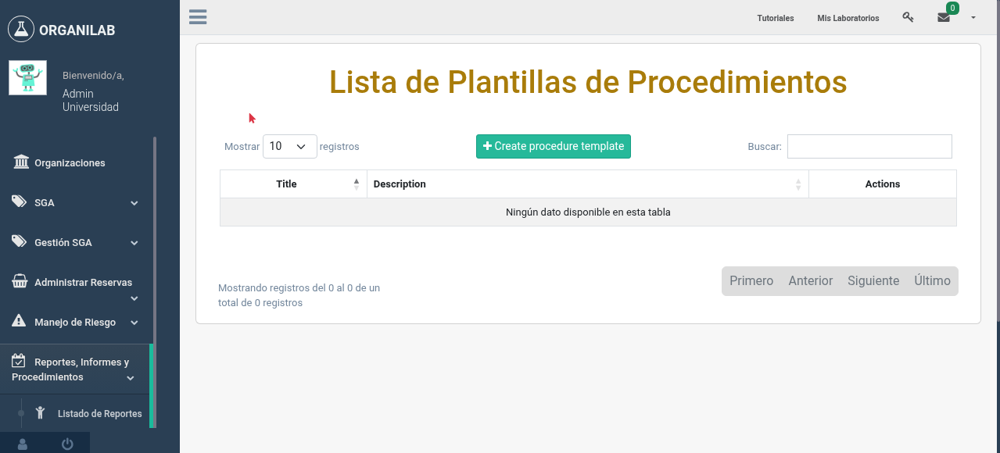

2. Crear Procedimiento
La creación de un procedimiento en Organilab comienza con la definición de una plantilla que incluye un título descriptivo, una descripción general y una secuencia de pasos detallados. Esta sección le guiará paso a paso en el proceso.
Crear la plantilla del procedimiento
Para crear un nuevo procedimiento, siga estos pasos desde el módulo de procedimientos de su organización:
- Navegue al módulo de procedimientos desde el menú principal de su organización.
- Haga clic en el botón "Crear Procedimiento" o "Nuevo Procedimiento".
- Complete el campo Título con un nombre claro y descriptivo que identifique la actividad. Por ejemplo: "Preparación de solución de NaOH 1M".
- Escriba una Descripción general del procedimiento, indicando su propósito, alcance y cualquier prerrequisito importante.
- Guarde la plantilla para continuar agregando pasos.

Formulario de creación de un nuevo procedimiento con los campos título y descripción
Agregar pasos secuenciales
Una vez creada la plantilla, debe agregar los pasos que conforman el procedimiento. Cada paso representa una instrucción específica que el operador debe seguir durante la ejecución.
- Dentro del procedimiento creado, ubique la sección de Pasos y haga clic en "Agregar Paso".
- Ingrese un Título breve para el paso. Por ejemplo: "Pesar el hidróxido de sodio".
- Utilice el editor de texto enriquecido para redactar la descripción detallada del paso. El editor permite aplicar formato, insertar listas, tablas y resaltar texto importante.
- Repita el proceso para cada paso adicional. Los pasos se organizan en orden secuencial.

Formulario para agregar un nuevo paso al procedimiento con el editor de texto enriquecido
Uso del editor de texto enriquecido
La descripción de cada paso soporta texto enriquecido, lo que permite crear instrucciones claras y bien formateadas. Las funcionalidades disponibles incluyen:
- Negritas y cursivas para resaltar información crítica.
- Listas numeradas y con viñetas para sub-instrucciones.
- Tablas para organizar datos como concentraciones o cantidades.
- Enlaces a documentos de referencia o manuales externos.
Consejos para buenas descripciones
Una plantilla bien redactada es la base para ejecuciones exitosas. Considere las siguientes recomendaciones al crear sus procedimientos:
- Sea específico: En lugar de "agregar reactivo", escriba "agregar 50 mL de ácido sulfúrico concentrado (H2SO4, 98%)".
- Incluya condiciones: Especifique temperatura, tiempo de espera, velocidad de agitación u otras condiciones relevantes.
- Mencione precauciones: Indique si un paso requiere equipo de protección personal específico o si hay riesgos particulares.
- Use verbos de acción: Comience cada paso con un verbo claro: pesar, medir, verter, agitar, calentar, filtrar.
- Defina criterios de éxito: Cuando sea aplicable, indique cómo verificar que el paso se completó correctamente (color esperado, pH, temperatura alcanzada).
Descripción: Disolver 1.20 g de fosfato de sodio dibásico (Na2HPO4) y 0.22 g de fosfato de sodio monobásico (NaH2PO4) en 800 mL de agua destilada. Agitar con barra magnética durante 5 minutos a temperatura ambiente. Verificar el pH con el potenciómetro calibrado. Ajustar a pH 7.0 +/- 0.05 con NaOH 0.1M o HCl 0.1M según sea necesario. Aforar a 1000 mL.

Vista del procedimiento con varios pasos agregados en orden secuencial